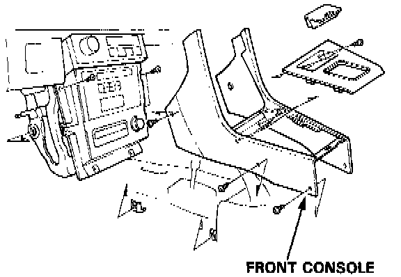
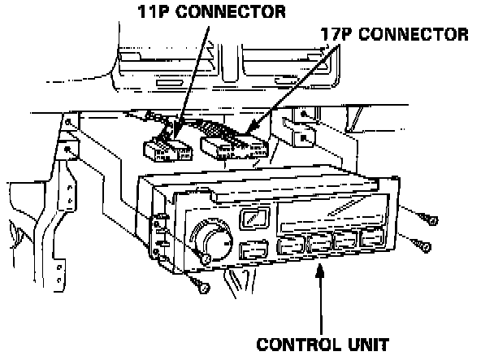

Electronic Climate Control
Control Unit / Switch Removal
1. Remove the screws, then remove the front console.
NOTE: Be careful not to break the pawls on the front console.

2. Remove the screws (4), then pull out the control unit.
3. Disconnect the wire harness from the control unit before removing.
Installation
Install the Climate control unit in the reverse order of removal.